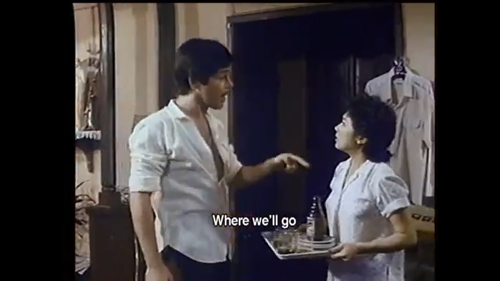

Theater/Film
Sa mga Kuko ng Liwanag (1976) by Lino Brocka

Relasyon (1982) by Ishmael Bernal
Sa mga kuko ng liwanag (1976) by Lino Brocka
This movie is all about the fisherman coming from poor area, descent into social alienation and coming to manila to search for his loved one named Ligaya and this is the element of film what we called theme of movie. The cast here is Hilda koronel, Lou Salvador, JR., Tommy Abuel, and Bembol Roco.
Relasyon (1982) by Ishmael Bernal
This movie is all about the woman who always take risks to build a meaningful relationship with a married man despite different hurdles that bound between them and this is the element of film what we called theme of the movie. The main character here is Christopher De Leon and Vilma Santos.